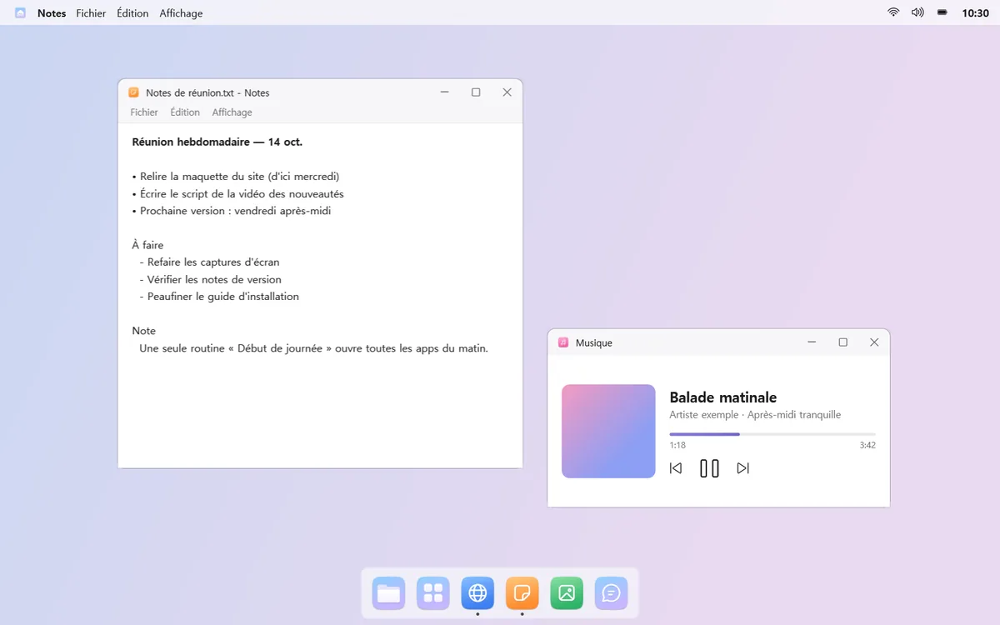
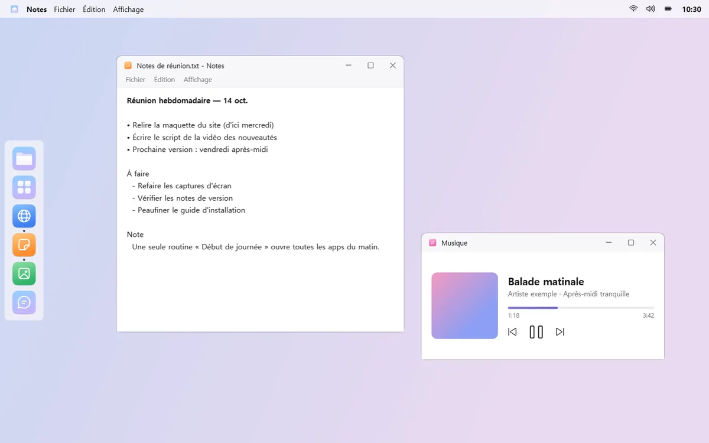
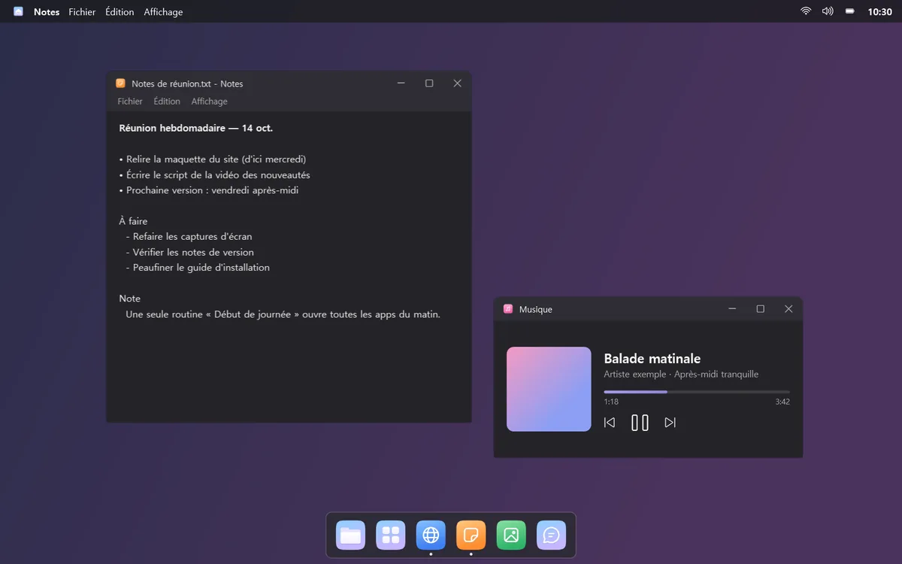
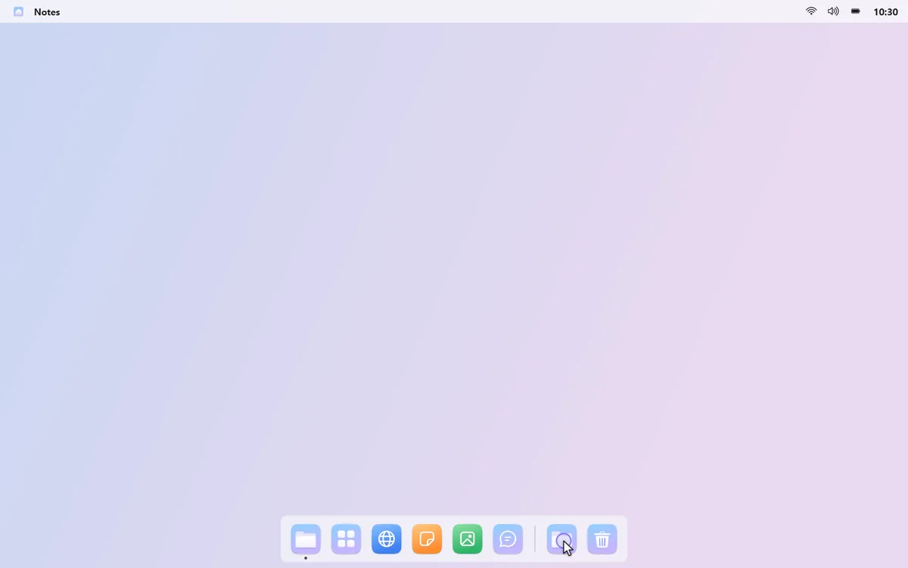
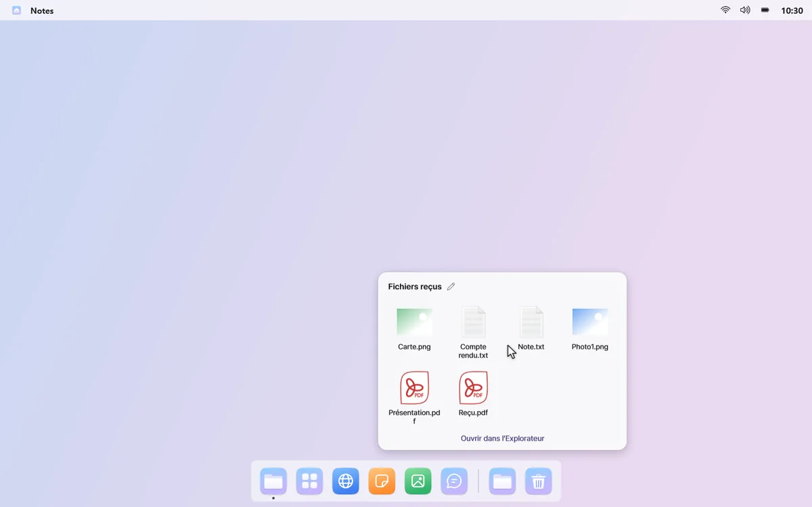
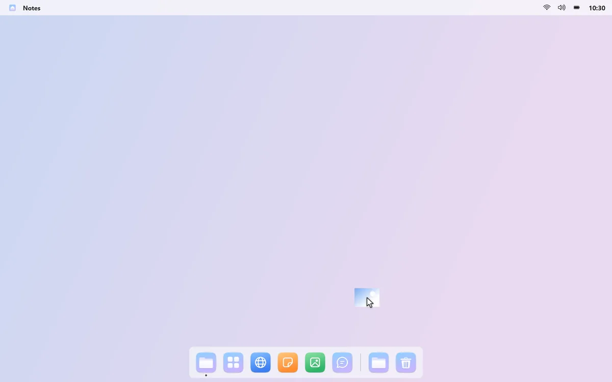
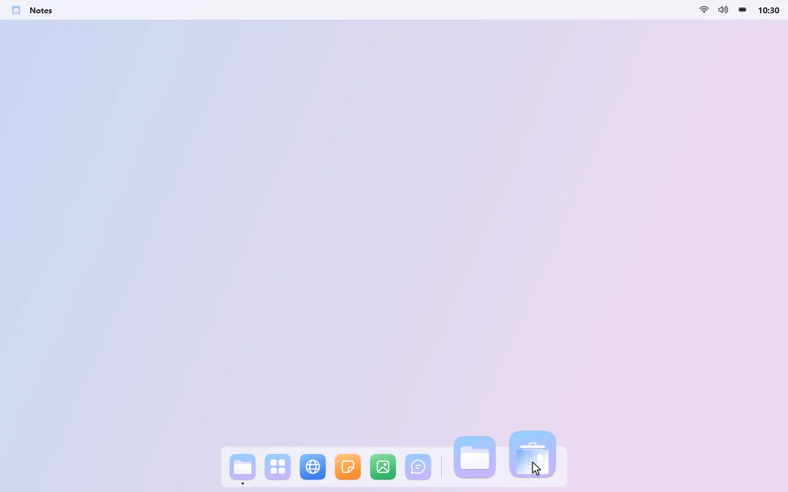
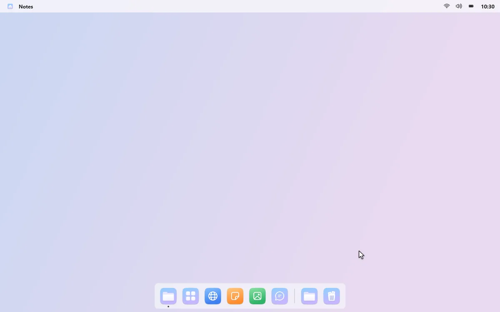
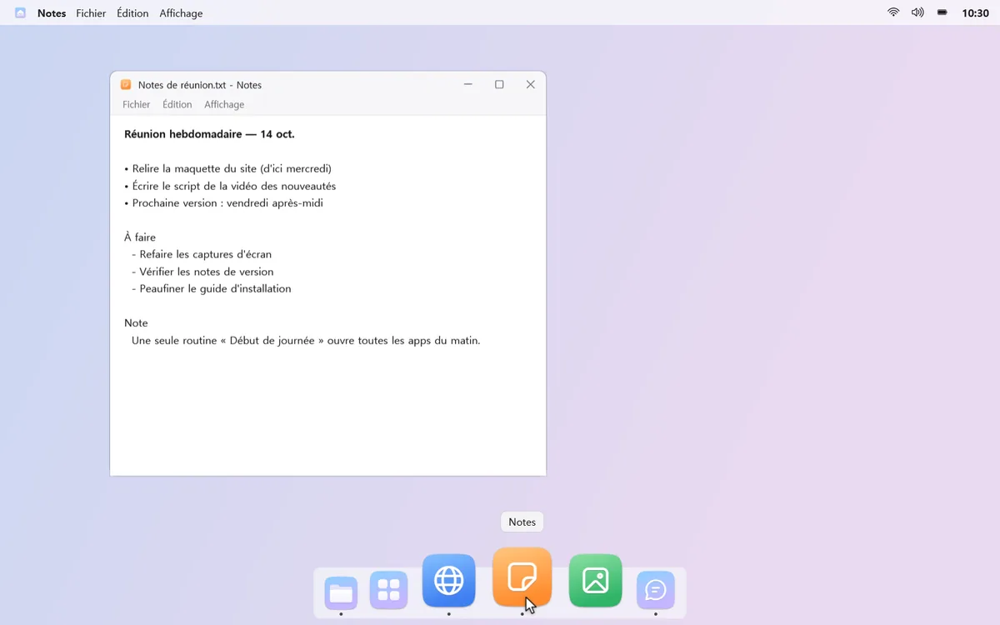
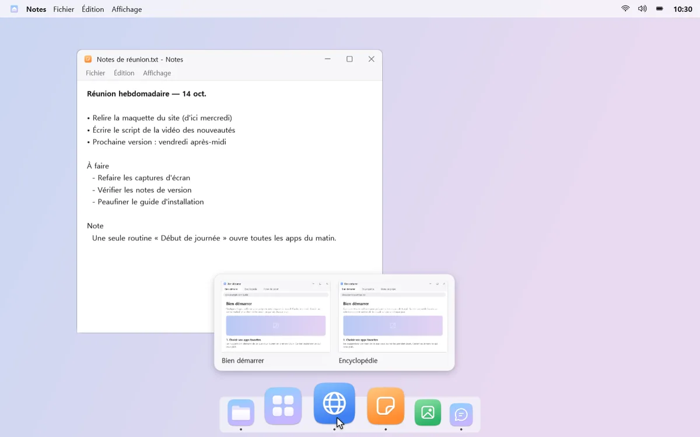

Un bas d'écran plus léger et mieux rangé
Remplacez la barre des tâches par un Dock qui ne contient que vos apps, vos dossiers et la Corbeille. Il reste discret jusqu'à ce que vous approchiez le pointeur du bord.
Votre place, votre style
Placez le Dock en bas, à gauche, à droite ou en haut. Faites glisser les icônes pour les réordonner, et choisissez le thème clair ou sombre et l'agrandissement au survol.



Vos téléchargements, à un clic
Gardez un dossier dans le Dock et cliquez dessus pour voir ses derniers fichiers en grille. Un petit point apparaît quand quelque chose de nouveau arrive.



La Corbeille, juste là
Faites glisser un fichier sur la Corbeille du Dock pour le jeter. Cliquez sur la Corbeille pour voir ce que vous avez jeté récemment, et faites un clic droit pour restaurer.


Choisissez vos fenêtres en aperçu
Cliquez sur une app qui a plusieurs fenêtres et choisissez celle que vous voulez dans les aperçus en direct. Si elle est sur un autre bureau, mongdock vous y emmène. Vous pouvez aussi n'afficher dans le Dock que les apps du bureau actuel.

